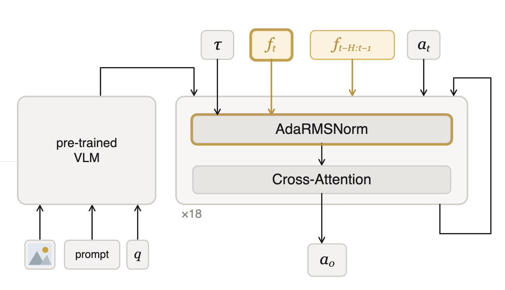

We address the problem of understanding when and why Vision-Language-Action models struggle with contact-rich manipulation tasks that require precise physical interaction. Prior work has primarily focused on addressing contact failures through force-augmented architectures and training-time regularizers, yet the root causes of these failures remain underexplored. We identify two distinct failure modes underlying this gap. Precision failures are rooted in a flow-matching policy training mismatch, and force failures arise from the distinctive structure of force signals. We address each failure mode with a targeted mechanism and combine them into FACT, which achieves 66% average success rate across five contact-rich tasks against 41% for the best prior baseline, in an evaluation spanning almost 2,500 real-world rollouts.
Compared to general manipulation tasks, contact-rich tasks require both fine-grained correction and reasoning about contact forces. Below, we illustrate these requirements through plug insertion, contrasting a successful execution with two distinct failure modes: precision failure and force failure.
The plug approaches, aligns with the socket, enters and fully seats.
The policy fails to align the plug with the socket and stalls at the rim.
The policy aligns the plug with the socket, but then fails to detect when the plug is fully seated.
Tracing each failure mode back to its root cause reveals two distinct sets of properties. One is rooted in how flow-matching policies are trained, the other in the structure of force signals themselves.
Each failure mode is addressed with a targeted mechanism, and together they form FACT, Force-Aware Contact-rich manipulation via Timestep modulation. Both preserve the base VLA architecture, require no additional data, and add negligible inference-time overhead.
We propose to improve the learning of sub-millimeter actions by reinforcing the low-noise, fine-correction regime. Specifically, we replace the Beta schedule with the Logit-Normal schedule, biasing the noise distribution towards the contact-rich regime. With mode m=1.5 instead of m=0, LN allocates 6× more gradient signal to τ < 0.2 than the Beta schedule. Critically, LN requires no changes to the model architecture, no additional training data, and no extra parameters, making it directly applicable to any flow-matching VLA.
Three design choices, one per force-failure property.

For the full ablation study and hyperparameter details, please refer to the paper.
FACT outperforms every baseline, with consistent gains on both precision- and force-critical tasks.
Average success rate (%) across all five tasks.
| Method | Plug | USB | Button | Board | Key | All ↑ |
|---|---|---|---|---|---|---|
| π₀.₅ [2] | 30.0 | 37.5 | 12.5 | 100 | 15.0 | 39.0 |
| TA-VLA [6] | 30.0 | 25.0 | 20.0 | 97.5 | 15.0 | 37.5 |
| ForceVLA [5] | 32.5 | 37.5 | 12.5 | 77.5 | 42.5 | 40.5 |
| π₀.₅ + LN (ours) | 50.0 | 47.5 | 57.5 | 87.5 | 37.5 | 56.0 |
| FACT (ours) | 57.5 | 47.5 | 75.0 | 90.0 | 60.0 | 66.0 |
Success rate (%) per task. All methods fine-tuned from π₀.₅ with LoRA. Tasks span precision-critical (plug, USB) and force-critical (button, board, key) regimes.
All experiments are conducted on a Franka Research 3 arm equipped with a wrist-mounted Bota SensONE F/T sensor.
Click to pause · both views are the same rollout, synced
@article{paresmorlans2026fact, title={Demystifying When and Why VLAs Fail in Contact-Rich Tasks and How to Fix Them}, author={Parés-Morlans, Carlota and Kuhn, Nils and Liu, Isabel and Longhini, Alberta and Bohg, Jeannette}, journal={arXiv preprint arXiv:2608.01402}, year={2026} }
This work was supported in part by Agile Robotics. Carlota Parés-Morlans is supported by a graduate fellowship from Knight-Hennessy Scholars at Stanford University. Nils Kuhn is supported by scholarships from the Friedrich Ebert Foundation and the German Academic Exchange Service (DAAD). Alberta Longhini is supported by a Wallenberg–Bienenstock Postdoctoral Fellowship.
We thank Hila Chefer for helpful discussions, and Michelle Yi for discussions on environment setup, data collection, and camera footage for figures.